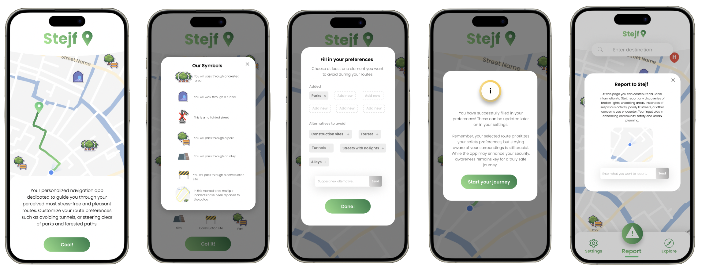

Stejf
Have you ever felt that unsettling twinge when walking home alone in the dark? This is the app crafted to bring you peace of mind.
Embark on a new level of feeling comfortable when walking alone with our revolutionary navigation app. Stejf is crafted to guide users along routes tailored to their individual preferences to feel more secure. Elevate your journey by customizing your suggested route based on factors such as bad-lit paths, avoiding tunnels, or steering clear of secluded areas.

But how did Stejf become Stejf?
It all started in the course User Experience Design and Evaluation at KTH Royal Institute of Technology, inspired by an event called 'Prototypes for Humanity'. The mission was clear: create a design that can positively impact humanity. Recognizing the widespread issue of individuals feeling insecure and anxious while walking alone in the dark, our team was determined to find a solution.
We began by diving deep into research and analysis, conducting interviews and surveys to understand the specific needs and pain points of our audience. Through these conversations, we gained invaluable insights into individual experiences, uncovering common challenges and concerns. With this knowledge, we set out to ideate and prototype potential solutions.

Iterative testing of tangible prototypes allowed us to validate design decisions, ensuring the final prototype not only addressed user needs but also provided a seamless user experience. Throughout the iterative process, we encountered several conflicting aspects and ethical concerns of our design, emphasizing the importance of user testing.
Final design
And so, Stejf was born – a name derived from the fusion of "Stay Safe" in Swedish writing. The prototype, designed in Figma, was presented at a UX exhibition and received great feedback for its innovative value and seamless design. But for us, the real success of Stejf lies in its potential to make a meaningful impact on people's lives, offering a guide of light in the dark and paving the way for safer journeys ahead.
Presentation poster